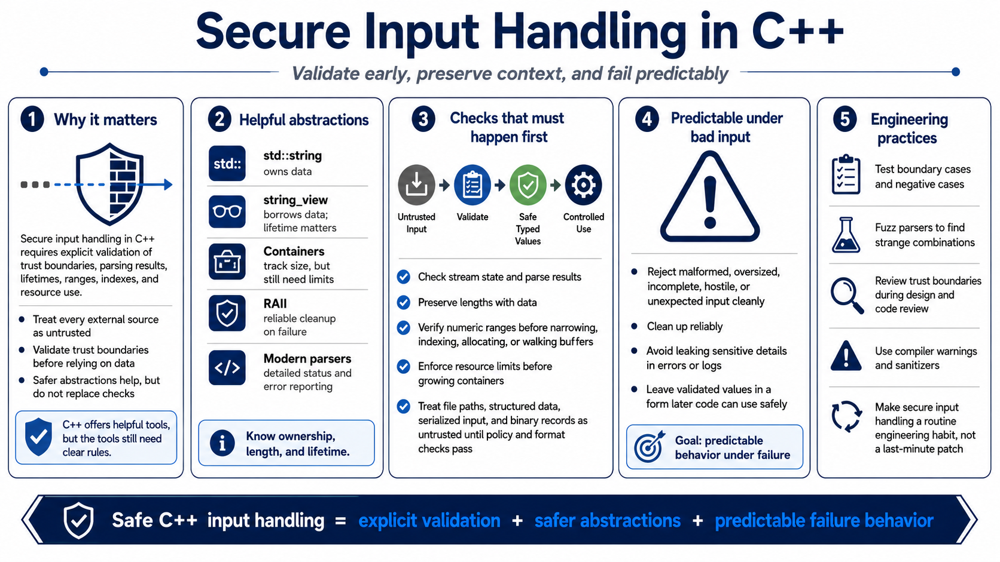

Course Summary and Key Takeaways
Connecting to LMS... Progress: in progress

Narration
Secure input handling in C++ requires explicit validation of trust boundaries, parsing results, lifetimes, ranges, indexes, and resource use. C++ gives you tools that make safe designs easier, but those tools still need clear rules. std::string owns data, string_view borrows it, containers track size, RAII improves cleanup, and modern parsing APIs can report detailed status. None of that helps if the program ignores where input came from or how a value will be used.
Strong C++ programs validate before use. They check stream state and parsing results. They preserve lengths with data. They verify numeric ranges before narrowing, indexing, allocating, or moving through buffers. They enforce resource limits before growing containers. They treat file paths, serialized data, structured formats, and binary records as untrusted until policy and format checks pass. They use safer abstractions while still checking the assumptions those abstractions cannot know.
The practical goal is predictable behavior under malformed, oversized, incomplete, hostile, or unexpected input. Good input handling rejects unsafe data cleanly, cleans up reliably, avoids leaking sensitive details, and leaves validated values in a form later code can use safely. When teams test boundary cases, fuzz parsers, review trust boundaries, and use warnings and sanitizers, secure input handling becomes a normal engineering habit rather than a last-minute patch.